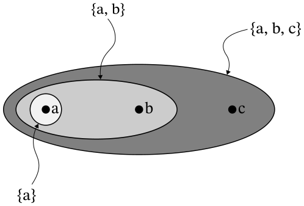

A First Look at Topological Spaces
Contents
Motivation
So far we've put a lot of effort into defining notions of distance, even giving these ideas fancy names. Distance is an important property in many situations, and you probably don't need me telling you this because you think about distances every day.
However, there are also many circumstances in which we care about the shape of a space but couldn't care less about distances. For instance, a famous puzzle that influenced the development of the entire field of topology is the problem of the Seven Bridges of Königsberg. Basically, the city of Königsberg had two major islands at its center, completely disconnected from the mainland by a river except for seven bridges.
Here is my beautiful depiction of the scenario. It should be obvious from my exceptional artistic ability, but the blue crud is the river and the grey smudges are the bridges. For a far inferior — though perhaps more descriptive — picture of the problem, I suggest a Google Image search.
The puzzle is as follows: Is it possible to walk across every bridge precisely once without getting wet?
Try drawing a couple paths and you'll quickly begin to suspect that the answer is no. This is correct, but proving it is tricky. The solution to a problem like this has nothing whatsoever to do with the distance between bridges. Stretch the river, move the bridges slightly, and the solution remains the same. This indicates that there may be more fundamental properties intrinsic to the space in this puzzle than distance.
The branch of mathematics called topology is, loosely speaking, the study of the properties of space which remain unaltered by continuous deformations. This probably sounds kind of like poo at this point, but bear with me. Continuous deformations are, intuitively, ways in which we can stretch, bend and move objects but not tear or cut them. As an example, an egg and a pancake are in some sense topologically equivalent, since you can squish an egg down until it becomes sufficiently cake-shaped. You won't even see this idea again for a while, but I find it helps to have some idea of where we're headed in the long run.
The definition
Before we proceed, let's recall a few of the nice properties I've previously showed are true of open sets in metric spaces:
- The empty set and the space itself are open.
- The union of any collection of open sets is open.
- The intersection of any finite collection of open sets is open.
As I mentioned before, we need to trash any definitions we have that mention metrics or distances, so the old definition of open sets in a metric space won't work for the more general topological spaces. What we do instead is kind of neat.
We define a topology in terms of which sets are open, and these open sets must obey certain properties. Actually, they must obey the properties I just listed! These properties talk about open sets only in terms of set theory, and never mention distance, so we simply demand that all of these properties hold.
Definition. A topology $\cal T$ on a set $X$ is a collection of subsets of $X$ called open sets which satisfy the following properties.
- The empty set $\varnothing$ and the set $X$ are in $\cal T$.
- The union of any collection of sets in $\cal T$ is in $\cal T$.
- The intersection of any finite collection of sets in $\cal T$ is in $\cal T$.
A topological space is a set $X$ together with a topology $\cal T$ on $X$.
As a slight abuse of notation, the set $X$ will usually be referred to as a topological space, and it will go without saying that we're talking about some topology on $X$. This is much the same as when we talk about a set as a metric space and it is implicitly understood to have some distance function.
This probably all feels a bit anticlimactic. I've been building up to this for a while, and it probably seems like this isn't anything new at all. At first, it might seem odd to define a topological space as a collection of sets that are open, but it's actually fairly natural. Hopefully at the very least you understand why the three properties in the definition are a natural choice. I spent the last two posts trying to get it to feel that way.
There is a sort of topological analogue to the concept in metric spaces of an open ball centered at a point:
Definition. A neighborhood of a point $x$ in a topological space is an open set containing $x$.
And of course, whenever there are open sets there are also closed sets:
Definition. A subset $U$ of a topological space $X$ is closed in $X$ if its complement, $X-U$, is open.
Notice again that sets in a topological space can be open, closed, both or neither. In every topological space $X$, we have that $\varnothing$ and $X$ are both open and closed. This information is now part of the very definition of open and closed sets!
Examples
I haven't been including terribly many examples so far, so I should probably try to fix that. Most people don't learn too well being relentlessly bombarded by definitions and theorems and not ever having an opportunity to step back and apply what they've just learned.
Example. Consider the set $X=\{a,b,c\}$ with just three elements. Let's determine whether the following is a valid topology on $X$:
$${\cal T} = \big\{\varnothing,\{a\}, \{a,b\}, \{a,b,c\}\big\}$$
Let's look at this topology visually:

The ellipses in this diagram depict the open sets in the topology. Each ellipse is a subset of all the ellipses that encompass it. The empty set is a subset of every set and is not depicted.
Even without the picture, it's easy to verify that all the required properties hold and that this is a topology on $X$. If you take the union of any collection of these open sets, you wind up with another open set in the topology. The same is true of > intersections. (We could list out all such unions and intersections, but that would take up too much space.) The empty set and $X$ itself are explicitly listed and so clearly they are open, and thus $\cal T$ is indeed a topology on $X$.
One last thing: the set $\{b\}$ in this topological space is neither open nor closed, as an example of what I was saying before.
There are two topologies that we can define right off the bat on any set $X$.
Definition. The trivial topology on $X$ is the set $\{\varnothing, X\}$.
Definition. The discrete topology on $X$ is the set $2^X$ of all subsets of $X$.
The trivial topology only has two[1] open sets, and it is in a sense the smallest topology we can define because those sets are required to be open by the definition of a topology. On the other hand, every set is open in the discrete topology, so it is in some sense the largest. Let's make rigorous these notions by defining the concepts of coarseness and fineness.
Definition. Given two topologies ${\cal T}_1, {\cal T}_2$ on a set $X$, we say that ${\cal T}_1$ is coarser than ${\cal T}_2$ if ${\cal T}_1\subseteq {\cal T}_2$. That is, every open set in ${\cal T}_1$ is also open in ${\cal T}_2$. Equivalently, we also sometimes say that ${\cal T}_2$ is finer than ${\cal T}_1$.
Notice that the trivial topology is always the coarsest topology we can define, and the discrete topology is always the finest. Also notice that there can exist topologies on a set that cannot be compared with each other in this way because it is possible for each topology to contain open sets that are not contained in the other.
Here's just one more example for now, and this should hopefully feel a lot like the "correct" definition to you. We can still talk about open balls in $\mathbb{R}^n$ purely as the sets $B(x_0,r)=\{x\in\mathbb{R}^n\mid d(x,x_0)< r\}$. We can define a topology using these that is very similar to the standard metric on $\mathbb{R}^n$:
Definition. The standard topology on $\mathbb{R}^n$ is the topology whose nonempty open sets are precisely the unions of open balls in $\mathbb{R}^n$.
The last thing I want to mention right now is that our definition of a topological space is broad. So broad, in fact, that many such spaces often behave in ways that are not at all desirable. Very frequently, we will talk about certain "tame" types of topological spaces. For instance, soon I'll introduce you to Hausdorff spaces, which have a number of nice properties that we'd generally expect "space" to have.
Next time we'll look again at some more properties of metric spaces. Fair warning: the next post is where things will start getting fairly technical, so make sure you're really comfortable with everything I've discussed so far!
Unless $X=\varnothing$, in which case it only has one and is particularly uninteresting. ↩︎